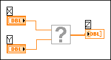

LabVIEW cannot find the subVI in the file system. The subVI file has been deleted, moved, or renamed. When LabVIEW cannot find the subVI, the subVI is dimmed, and its icon contains a question mark.
The following table describes conditions that cause missing subVIs and information about how to resolve them.
| Condition | Solution |
|---|---|
| SubVI has been deleted | Delete the icon for the missing subVI and create a new subVI to replace the missing one. |
| SubVI has been moved or renamed | Right-click the missing subVI and select Replace from the shortcut menu to display the Functions palette. Click the Select a VI icon or text on the Functions palette and navigate to the correct subVI. |
| Driver VI is missing | Install support for the driver. Even if you installed a driver with a previous version of LabVIEW, you must reinstall that driver with the current version of LabVIEW. Use the NI Instrument Driver Finder to search for and install instrument drivers. Search for National Instruments hardware drivers at NI Drivers and Updates on the National Instruments Web site or install them using the installation media that shipped with your purchase. |
| SubVI from a LabVIEW add-on software package is missing | Install the version of the add-on that corresponds to the version of LabVIEW on the computer. You can install National Instruments add-ons using the installation media that shipped with your purchase or download add-ons from the Services Resource Center on the National Instruments Web site. |
When you replace the subVI with one that has a matching connector pane, the subVI appears darker, and the wires are not broken.